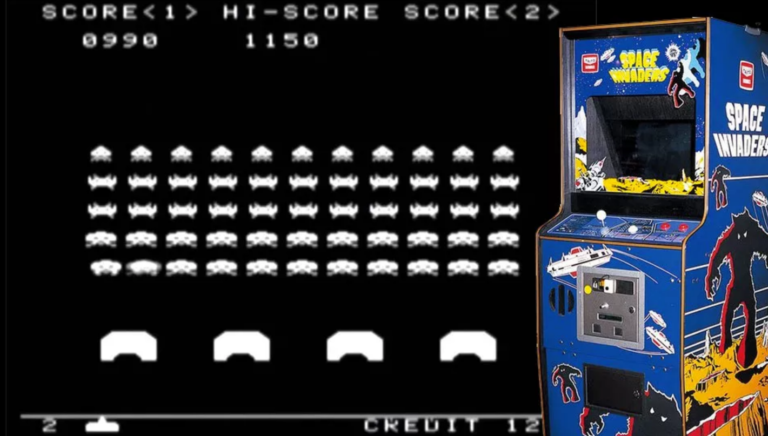

O primeiro jogo de fliperama chamou-se Computer Space e foi lançado em 1971. Logo outros jogos de sucesso surgiram, como Pong, Invasores do espaço e Pac-Man. O primeiro console caseiro também surgiu nessa época. Em 1977, a empresa Atari lançou um console com cartuchos removíveis.
Foi lançado em 1991 similar ao Final Fight, se passando até na mesma cidade de Final Fight só que em no ano de 2026, com a jogabilidade quase identicadiferenciando apenas a mecanica de correr. A versão para arcade permitia escolher entre 4 personagens, incluindo o Capitain Commando. Curiosidades: a Capcom tinha a intenção de lançar um mascote, seguindo a linha da Nintendo e da Sega, com Mario e Sonic, respectivamente. Por isso, o personagem tem as iniciais que formam o nome da empresa (Captain Commando = CapCom). Outra curiosidade é que o personagem ninja que no ocidente chama-se Ginzu, tirado das facas Ginsu, imortalizadas na canção 1406, dos Mamonas Assassinas.
Mesmo não tendo um conhecimento muito grande na gringa Cadillac and Dinossaur foi uma febre no Brasil. Embora o jogo tenha sido elogiado, o grande sucesso aqui no Brasil não foi o suficiente para haver outros lançamentos e versões para consoles. Vários fãs já fizeram petições para a Capcom lançar o jogo em outras plataformas, mas é provável que isso não esteja nos planos da empresa.
Um dos maiores sucessos que transformaram a industria dos games, é responsável por inaugurar a Era de Ouro dos Arcades, um período em que houve avanços sem precedentes no desenvolvimento de jogos. Lançado em 1978, o arcade se tornou um fenômeno cultural, o que pode ser atestado com o primeiro evento de esports da história. Aliás, no Japão, a imensa popularidade Space Invaders causou uma escassez temporária de moedas de 100 ienes
(1980): Desenvolvido pela Namco, "Pac-Man" é um dos jogos mais reconhecíveis e amados da história dos fliperamas. Os jogadores controlam um personagem redondo que deve comer pontos e evitar fantasmas. A simplicidade de Pac-Man e seu conteúdo não violento conseguiu algo que os outros jogos eram incapazes: conquistar o público feminino.